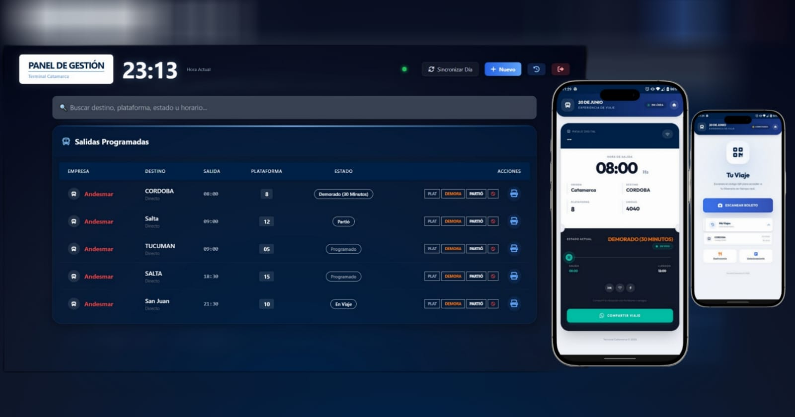

Desarrollador Full Stack especializado en sistemas en tiempo real, integración de hardware y optimización de procesos operativos críticos.

Terminal de Ómnibus & Empresas
Plataforma integral para digitalizar el flujo de pasajeros y buses. Resuelve la falta de sincronización mediante un ecosistema en tiempo real.
Migración de arquitectura financiera antigua a Electron.js + SQLite. Objetivo: Modernizar la interfaz y asegurar la portabilidad offline mediante ingeniería inversa de datos.
Backend & API REST
Frontend Dinámico
Real-time Communication
Desktop Apps (Próximamente)
Hablemos sobre cómo migrar sistemas antiguos o crear nuevas soluciones en tiempo real.
Iniciar ConversaciónDiseñado y Desarrollado con pasión by agunacci. 2026.